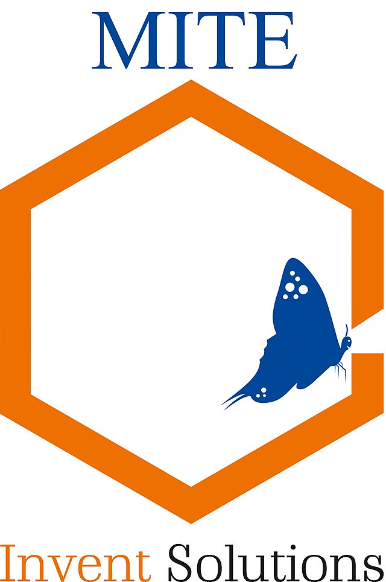

MANGLORE INSTITUTE OF TECHNOLOGY AND ENGINEERING
Stones turn into diamond

mite@gmail.com
Core values
Mangalore Institute of Technology & Engineering (MITE) established in the year 2007 today stands tall with 3000+ students, 180+ Faculty, offering 10 Undergraduate Programs in Engineering, 3 Post Graduate Programs in Engineering, Master of Business Administration (MBA), Master of Computer Applications (MCA) and 7 Research Programs. The institution is recognized by All India Council for Technical Education(AICTE), New Delhi and is affiliated to one of India's largest technical university, Visvesvaraya Technological University (VTU), Belagavi.
“To attain perfection in providing Globally Competitive Quality Education to all our Students and also benefit the global community by using our strength in Research and Development“
“To establish world class educational institutions in their respective domains, which shall be centers of excellence in their Stated and Implied sense. To achieve this objective we dedicate ourselves to meet the Challenges of becoming Visionary and Realistic, Sensitive and Demanding, Innovative and Practical and Theoretical and Pragmatic; All at the same time”
Core values
Passion and commitment: We strive to work with passion and commitment in all our activities towards the ultimate good of the society.
Making a difference: We strive to make a positive difference in the lives of all our students and the future generation by going beyond curriculum and academics.
Family culture: We believe in inculcating and nurturing a 'MITE FAMILY' culture among all the staff, students, alumni and all those who associate with us.
Care for the environment: We strive to work with utmost care for Nature creating a serene and conducive environment for quality education and research.